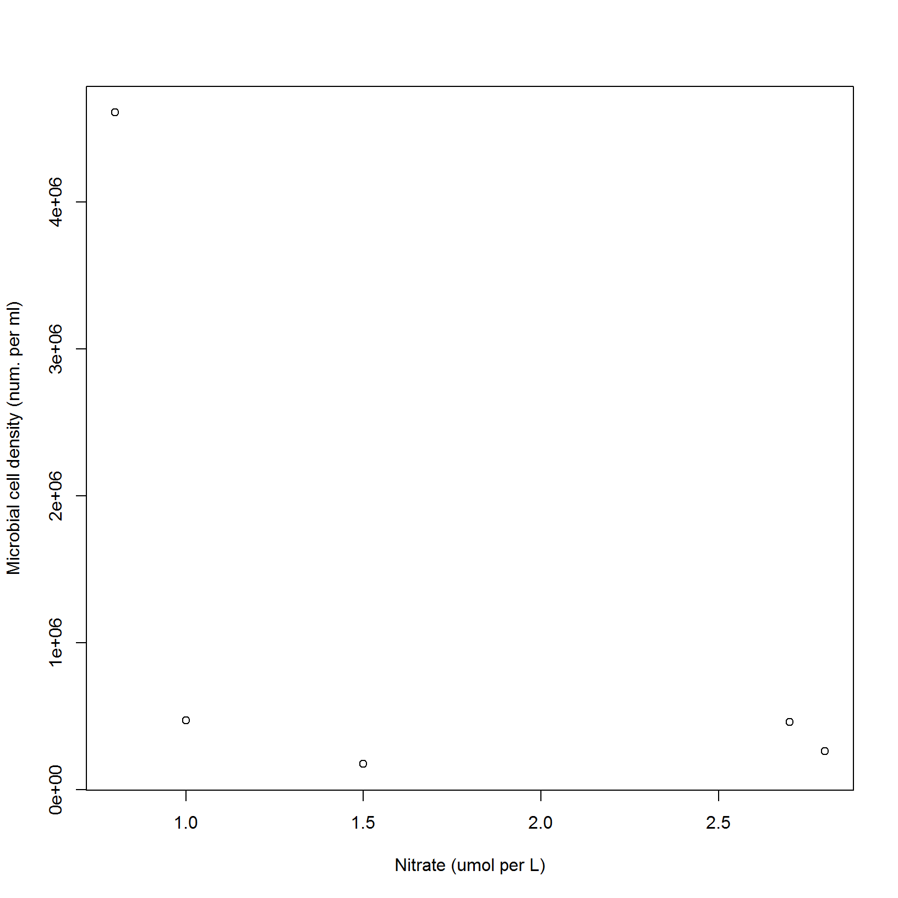

Biology generates BIG data. But, spreadsheet programs just aren’t equipped to process data tables consisting of millions of rows. Luckily, R can handle data of any size and this lesson will give you the tools the get started answering your BIG questions.
In this lesson learners will:
[ ], [[ ]],
[ , ]typeof(), class(), str()factor(), levels()matrix()list()names(), colnames(),
rownames(), dimnames()length(), nrow(), ncol()rbind() and cbind()subset()as.numeric()is.na()Before beginning this lesson you should have completed the lessons Navigating your computer and Intro to R and RStudio.
Before you begin:
In this lesson we will be using R to work with data from NEON’s
Teakettle Creek aquatic site. Data come from the downstream sensor
location and include information on surface water temperature (DP1.20053.001),
nitrate DP1.20033.001
and water quality (DP1.20288.001).
Data were downloaded and summarized into a table which is located in the
student workbook project:
data/NEON_water/surfwater_30min_avg_TECR_2021-04_2021-10.csv.
Let’s begin by reading these data into R.
Use the read.csv() function to read the
surfwater_30min_avg_TECR_2021-04_2021-10.csv file into a
data frame named surfwater.
In computer science, data come in several different types based on their quantitative or qualitative properties and how the computer stores their values. R uses several different data types which you should be aware of:
TRUE or FALSE (computed and stored as
1 or 0)2+4i)We can check the type of data in an object using the
typeof() function.
[1] "integer"[1] "double"[1] "logical"In the lesson Intro to R and RStudio, we learned that a vector is an ordered set of values that are all of the same type. We also learned that the columns of a data frame are vectors. Let’s see how this works.
In the Environment panel, click on the blue arrow next to
surfwater. Notice that each column name appears as
$ columnname followed by a : and then
information about the data type of each column and the first few
entries.
What is the data type of the siteID column? What is the
data type of the pH.mean column? How could you check?
Let’s explore vectors a bit more. Let’s take the first 10 values in
the pH.mean column and assign them to a new vector:
Suppose we discover that the first value of this vector is invalid
and need to replace it with a missing value (NA). Do you
think this will change the type of data in the vector?
[1] NA 7.248333 7.240000 7.232333 7.230333 7.229333 7.229333 7.229667
[9] 7.227667 7.223667[1] "double"The data type stays the same. Now what do you think will happen if we replace the first value with something more ambiguous:
[1] "7.2 or 7.3" "7.24833333333333" "7.24" "7.23233333333333"
[5] "7.23033333333333" "7.22933333333333" "7.22933333333333" "7.22966666666667"
[9] "7.22766666666667" "7.22366666666667"[1] "character"The vector now has type character because all elements in the vector must have the same data type and “7.2 or 7.3” is not a number.
If you every come across a vector that you think should be numeric
(e.g. an integer or double data type), but is interpreted as character
data, you can use the as.numeric() function to
coerce the vector to be a numeric data type. R will try
to interpret the text as a number and if it can’t it will produce
NA. This can be useful for identifying data errors and
typos.
Warning: NAs introduced by coercion [1] NA 7.248333 7.240000 7.232333 7.230333 7.229333 7.229333 7.229667
[9] 7.227667 7.223667The output warns us that coercing to a numeric vector created missing values. The new numeric vector shows us that the first element was not a number, but the rest of the data were.
At some point you may come across a strange value in a vector that you thought contained numeric data:
Inf = positive infinity-Inf = negative infinityNaN = not a number (undefined)These can be good warning signs that you calculations involve 0 or are potentially not doing what you thought they should be doing:
[1] -4 -3 -2 -1 0 1 2 3 4[1] -Inf -Inf -Inf -Inf NaN Inf Inf Inf Inf[1] 1 1 1 1 NaN 1 1 1 1We have already learned about two ways that R stores data: vectors and data frames. Each of these is a class of objects. In computer science, an object’s class determines what kinds of things you can do with it. For example, since vectors are ordered we can select individual elements from them using integer indices:
[1] "7.24833333333333"You can find out the class of an object using the
class() function.
[1] "character"[1] "numeric"[1] "data.frame"That’s interesting: note that the class of a vector isn’t “vector”, but the type of the data stored in it.
A factor is a type of vector whose data are categorical. More specifically, the elements come from a finite set of values called levels. For example, in the small mammal data in lesson Data organization in spreadsheets, the sex of the rodents was only male or female. Factors come up quite often in R, so it is important to understand how factors store data.
In the surfwater data frame, the siteID
column identifies the NEON site where the data are collected. This
column is currently a character vector, but it would be reasonable to
convert it to a factor since there are only a finite number of distinct
sites that data could come from.
# Create a new vector containing the first 10 values of the siteID column
sites <- surfwater$siteID[1:10]
# View the contents of the vector and its class
sites [1] "TECR" "TECR" "TECR" "TECR" "TECR" "TECR" "TECR" "TECR" "TECR" "TECR"[1] "character" [1] TECR TECR TECR TECR TECR TECR TECR TECR TECR TECR
Levels: TECR[1] "factor"The data now have class “factor” instead of “character” and the
elements are no longer surrounded by quotes. We also see that this
factor has one level (i.e. one possible value) which is
TECR.
What happens if we try to add a new element with a different value onto this factor?
[1] "1" "1" "1" "1" "1" "1" "1" "1" "1" "1"
[11] "ABCD"[1] "character"The factor was converted back to a character vector to match the type
of data we added ("ABCD"). But, where did the
"1" come from?
The most important thing to remember about factors is that the values
in the vector are actually integers, with each integer corresponding to
a level. The labels for the levels are saved in an attribute of the
factor and can be accessed using the function levels().
# Create a factor with a new set of sites
sites <- factor(c("TECR", "TECR", "TECR", "ABCD"))
# View the contents of sites
sites[1] TECR TECR TECR ABCD
Levels: ABCD TECR[1] "ABCD" "TECR"[1] 2 2 2 1By default, R will alphabetize a character vector before assigning
levels, so even though "TECR" came first in the vector,
"ABCD" comes first alphabetically and was assigned to the
first level.
You can change the default levels after creating a vector using the
levels() function.
[1] ABCD ABCD ABCD TECR
Levels: TECR ABCD[1] 2 2 2 1Or, you can define the levels of a factor when you initially create it.
# Define a new factor containing sites names
sites <- factor(c("TECR", "TECR", "TECR", "ABCD"), levels = c("TECR", "ABCD", "GGGG"))
sites[1] TECR TECR TECR ABCD
Levels: TECR ABCD GGGGNote that a factor can contain levels that don’t actually appear in the data.
Factors and their levels become important if you need to do make graphs with or do statistics on categorical data.
Vectors are great for handling data, but what if you need to combine
values that are not the same data type? That’s where a
list becomes useful. A list is an ordered set of values
or objects that do not need to have the same data type. You can create a
list using the list() function.
[[1]]
[1] "TECR"
[[2]]
[1] "ABCD"
[[3]]
[1] 7 8 9
[[4]]
[1] 100sitelist has four elements: the first two are each
character vectors with one element, the third element is an integer
vector with the numbers 7 - 9, and the fourth element of the list is a
numeric vector with one element (100).
Vectors and lists are both one-dimensional and contain a finite number of elements, also known as their length.
[1] 3[1] 1Because vectors and lists are one-dimensional, we can access their
elements using integer indices (e.g. the 1st, 2nd, 3rd, 4th, … etc
element). The way to index differs between vectors and lists. We use a
single set of brackets [ ] to access the elements of a
vector and a double set of brackets [[ ]]to access the
elements of a list.
[1] 7 8 9[1] 7Figure out how each of these lists differ using the
length() function:
Which one of these works? Why?
For the line that works, did it return what you expected? What would need to change?
This doesn’t work because it returns a list of length 1 and we cannot select a 3rd element because it does not exist.
[[1]]
NULL[1] "list"[1] 1This works, because sitelist[3] returns a list of length
1 and so selecting the 1st element returns the whole list.
[[1]]
[1] 7 8 9[1] "list"[1] 1If we actually wanted the 1st element from the vector saved as the third element of sitelist, we would actually need to use:
[1] 7Whenever you lose track of what is contained in an object, it is
useful to examine the object’s structure using the str()
function. Let’s see how this works on one of the lists we made:
List of 4
$ : chr "TECR"
$ : chr "ABCD"
$ : int [1:3] 7 8 9
$ : num 100We see that it is a list with 4 elements and each of these elements are then summarized.
Now that we are starting to understand the two main one-dimensional data objects in R (vectors and lists) we can talk about two-dimensional data objects. We’ve already seen one of these- the data frame. A data frame is a special type of list!
A data frame is a list of vectors that all have the same length, but the vectors can have different data types from each other. This makes it a very flexible and useful way to work with data tables.
Let’s check out the structure of the surfwater
dataframe.
'data.frame': 10272 obs. of 11 variables:
$ siteID : chr "TECR" "TECR" "TECR" "TECR" ...
$ startDateTime : chr "2021-04-01 00:00:00" "2021-04-01 00:30:00" "2021-04-01 01:00:00" "2021-04-01 01:30:00" ...
$ endDateTime : chr "2021-04-01 00:30:00" "2021-04-01 01:00:00" "2021-04-01 01:30:00" "2021-04-01 02:00:00" ...
$ surfWaterTemp.mean : num 3.79 3.71 3.58 3.42 3.26 ...
$ surfWaterNitrate.mean : num 2.05 2.1 2.15 2.2 2.25 2.3 2.3 2.3 2.3 2.3 ...
$ specificConductance.mean: num 27.4 27.4 27.3 27.4 27.4 ...
$ dissolvedOxygen.mean : num 10.4 10.4 10.4 10.5 10.5 ...
$ pH.mean : num 7.25 7.25 7.24 7.23 7.23 ...
$ chlorophyll.mean : num 0.692 0.732 0.77 0.814 0.806 ...
$ turbidity.mean : num 0.967 1.211 1.542 1.615 1.51 ...
$ fDOM.mean : num 35.3 35.7 36.2 36.7 36.9 ...We can see that it is a data frame with 10272 rows and 11 columns.
The names of the columns are given after the $ symbol,
along with a preview of their contents. This is very similar in
structure to the output when we used str() on a list. The
main difference is that each element in this list has a
name which is the name of the column.
[1] "siteID" "startDateTime"
[3] "endDateTime" "surfWaterTemp.mean"
[5] "surfWaterNitrate.mean" "specificConductance.mean"
[7] "dissolvedOxygen.mean" "pH.mean"
[9] "chlorophyll.mean" "turbidity.mean"
[11] "fDOM.mean" NULLThe elements of sitelist don’t have names, so we get
NULL (an empty value).
We could assign names using the names() function. These
then show up in the structure of the object:
# Assign names to the elements of sitelist
names(sitelist) <- c("site1", "site2", "values1", "values2")
# View the structure of the object
str(sitelist)List of 4
$ site1 : chr "TECR"
$ site2 : chr "ABCD"
$ values1: int [1:3] 7 8 9
$ values2: num 100[1] 100In summary, a data frame is a named list, which
means that we can access its named elements using the $
symbol: dataframe$columnname. However since a data frame is
also just a list, you can also access columns using [[ ]],
though this is not commonly done.
[1] "2021-04-01 00:30:00" "2021-04-01 01:00:00" "2021-04-01 01:30:00"
[4] "2021-04-01 02:00:00" "2021-04-01 02:30:00" "2021-04-01 03:00:00"
[7] "2021-04-01 03:30:00" "2021-04-01 04:00:00" "2021-04-01 04:30:00"
[10] "2021-04-01 05:00:00"In contrast, a matrix is like a 2-dimensional
vector- all of the elements must have the same data type. One way to
make a matrix is by using the matrix() function:
[,1] [,2] [,3]
[1,] 10 12 14
[2,] 11 13 15We access the elements of a matrix using single square brackets with
a comma to denote the row and column we need: X[r, c].
[1] 15[1] 12 13[1] 10 12 14[1] 11 13 15[1] 11 13 15We can also the same method to access elements in a data frame.
[1] "2021-04-01 01:00:00" [1] 2.05 2.10 2.15 2.20 2.25 2.30 2.30 2.30 2.30 2.30 siteID startDateTime endDateTime surfWaterTemp.mean
3 TECR 2021-04-01 01:00:00 2021-04-01 01:30:00 3.582
surfWaterNitrate.mean specificConductance.mean dissolvedOxygen.mean pH.mean
3 2.15 27.34967 10.419 7.24
chlorophyll.mean turbidity.mean fDOM.mean
3 0.7696667 1.542 36.229What class of object is returned by each of the commands above?
Matrices and data frames can have column and row names that make it
easier to access their elements. You can set or view the column names
and rownames of a matrix using colnames() and
rownames()
# Set the row names of X
rownames(X) <- c("A", "B")
# Set the column names of X
colnames(X) <- c("one", "two", "three")
# Print the contents of X
X one two three
A 10 12 14
B 11 13 15 int [1:2, 1:3] 10 11 12 13 14 15
- attr(*, "dimnames")=List of 2
..$ : chr [1:2] "A" "B"
..$ : chr [1:3] "one" "two" "three"In a data frame, you can use names() or
colnames() to access the column names.
[1] "siteID" "startDateTime"
[3] "endDateTime" "surfWaterTemp.mean"
[5] "surfWaterNitrate.mean" "specificConductance.mean"
[7] "dissolvedOxygen.mean" "pH.mean"
[9] "chlorophyll.mean" "turbidity.mean"
[11] "fDOM.mean" Column and row names make it easier to extract data from matrices and dataframes because you don’t need to remember which row or column the data you need are in. Instead of using an integer index to access a value, you can use the name of the column(s) or row(s) in quotes.
one two three
11 13 15 If you want more than one column or row, supply a vector containing the column or row names.
# Access the first 3 rows from the pH and temperature columns
surfwater[1:3, c("pH.mean", "surfWaterTemp.mean")] pH.mean surfWaterTemp.mean
1 7.252000 3.792
2 7.248333 3.712
3 7.240000 3.582We can append rows and columns to matrices and data frames using
rbind() and cbind().
one two three
A 10 12 14 NA
B 11 13 15 NA one two three
A 10 12 14
B 11 13 15
A 10 12 14
B 11 13 15What is the contents of the matrix X after running the
previous two lines of code?
one two three
A 10 12 14
B 11 13 15X hasn’t changed! This is because we did not assign the
results of cbind() and rbind() to an objects
so the results just printed in the console. If we actually wanted to
modify the matrix X we would need to use the assignment
operator <-.
one two three
A 10 12 14 NA
B 11 13 15 NA
A 10 12 14 NA
B 11 13 15 NAcbind() and rbind() also work for data
frames.
# Make a new data frame that contains the first 5 rows of surfwater duplicated
rbind(surfwater[1:5,], surfwater[1:5,]) siteID startDateTime endDateTime surfWaterTemp.mean
1 TECR 2021-04-01 00:00:00 2021-04-01 00:30:00 3.792
2 TECR 2021-04-01 00:30:00 2021-04-01 01:00:00 3.712
3 TECR 2021-04-01 01:00:00 2021-04-01 01:30:00 3.582
4 TECR 2021-04-01 01:30:00 2021-04-01 02:00:00 3.423
5 TECR 2021-04-01 02:00:00 2021-04-01 02:30:00 3.258
6 TECR 2021-04-01 00:00:00 2021-04-01 00:30:00 3.792
7 TECR 2021-04-01 00:30:00 2021-04-01 01:00:00 3.712
8 TECR 2021-04-01 01:00:00 2021-04-01 01:30:00 3.582
9 TECR 2021-04-01 01:30:00 2021-04-01 02:00:00 3.423
10 TECR 2021-04-01 02:00:00 2021-04-01 02:30:00 3.258
surfWaterNitrate.mean specificConductance.mean dissolvedOxygen.mean pH.mean
1 2.05 27.39500 10.36000 7.252000
2 2.10 27.35267 10.38167 7.248333
3 2.15 27.34967 10.41900 7.240000
4 2.20 27.36433 10.46733 7.232333
5 2.25 27.38633 10.51767 7.230333
6 2.05 27.39500 10.36000 7.252000
7 2.10 27.35267 10.38167 7.248333
8 2.15 27.34967 10.41900 7.240000
9 2.20 27.36433 10.46733 7.232333
10 2.25 27.38633 10.51767 7.230333
chlorophyll.mean turbidity.mean fDOM.mean
1 0.6916667 0.9673333 35.25833
2 0.7323333 1.2106667 35.74600
3 0.7696667 1.5420000 36.22900
4 0.8136667 1.6146667 36.68633
5 0.8063333 1.5096667 36.87733
6 0.6916667 0.9673333 35.25833
7 0.7323333 1.2106667 35.74600
8 0.7696667 1.5420000 36.22900
9 0.8136667 1.6146667 36.68633
10 0.8063333 1.5096667 36.87733Matrices are two dimensional objects where every element has the same data type. Matrices are a special case of an array, which is an n-dimensional object in which every element has the same data type. You may not need to use arrays very often, but it is useful to know they exist.
Create an array using array(data, dim), where data
contains the values to put in the array and dim is an integer vector
specifying its dimensions. Here’s an example of a 3-dimensional array
and how to access its elements:
, , 1
[,1] [,2] [,3]
[1,] 1 5 9
[2,] 2 6 10
[3,] 3 7 11
[4,] 4 8 12
, , 2
[,1] [,2] [,3]
[1,] 13 17 21
[2,] 14 18 22
[3,] 15 19 23
[4,] 16 20 24[1] 10RStudio has a very useful Environment panel that reports the structure and dimensions of any object that you create. However, sometimes you will need to use the size of your data in your code (example to follow). This is where you might want to use the functions:
dim() will print the dimensions of an object (number of
rows, number of columns, number of higher order dimensions)dimnames() will print the names for each dimension as a
list where the first element is the row names, the second element is the
column names and subsequent elements are higher order names.nrow() or ncol() will print an integer
with the number of rows or columnsrownames() or colnames() will print a
character vector with the names of the rows or columns.The first two will work on any matrix, array or data frame, whereas the row and column functions only work on 2-dimensional objects (matrices and data frames).
Let’s see how this might be useful if we wanted to view the last five
rows of surfwater.
[1] 10272 siteID startDateTime endDateTime surfWaterTemp.mean
10268 TECR 2021-10-31 21:30:00 2021-10-31 22:00:00 4.615
10269 TECR 2021-10-31 22:00:00 2021-10-31 22:30:00 4.650
10270 TECR 2021-10-31 22:30:00 2021-10-31 23:00:00 4.629
10271 TECR 2021-10-31 23:00:00 2021-10-31 23:30:00 4.629
10272 TECR 2021-10-31 23:30:00 2021-11-01 00:00:00 4.641
surfWaterNitrate.mean specificConductance.mean dissolvedOxygen.mean
10268 2.90 NA NA
10269 2.90 NA NA
10270 2.85 NA NA
10271 2.85 NA NA
10272 2.90 NA NA
pH.mean chlorophyll.mean turbidity.mean fDOM.mean
10268 NA NA NA NA
10269 NA NA NA NA
10270 NA NA NA NA
10271 NA NA NA NA
10272 NA NA NA NAUsually when we work with data, we don’t know exactly which row(s)
contain the values we are intersted in. For example, perhaps we want to
calculate the average surface water temperature, but only for the month
of August. To do this we would first need to identify the rows in
surfwater that were measured in August (presumably using
the startDateTime column) and then calculate the average of
the values in the surfwarterTemp.mean column.
To identify the rows from August, we need to do a logical
comparison and test whether the dates in the
startDateTime column come from the month of August.
Here are all of the basic comparison operations in R, illustrated using a vector of integers and one missing value. Comparisons will return a logical vector that is TRUE where the comparison is true, FALSE where the comparison is false.
# Create a vector x containing integers from -3 to 3 followed by a missing value
# Note that using parentheses around this expressions causes
# the output of x to print to the console.
x <- c(-3:3)
# Which values of x are equal to 0?
x == 1[1] FALSE FALSE FALSE FALSE TRUE FALSE FALSE[1] TRUE TRUE TRUE FALSE FALSE FALSE FALSE[1] TRUE TRUE TRUE TRUE FALSE FALSE FALSE[1] FALSE FALSE FALSE TRUE TRUE TRUE TRUE[1] FALSE FALSE FALSE FALSE TRUE FALSE TRUEWe can use the ! operator to negate any logical
comparison:
[1] TRUE TRUE TRUE TRUE FALSE TRUE TRUE[1] FALSE FALSE FALSE TRUE TRUE TRUE TRUE[1] TRUE TRUE TRUE TRUE FALSE TRUE FALSEWe can also make more complex logical statements by combining
comparisons with the boolean operators “and” (&) and
“or” (|):
[1] TRUE FALSE FALSE FALSE FALSE TRUE TRUE[1] FALSE FALSE FALSE FALSE FALSE FALSE FALSESince each of these comparisons operates elementwise
and returns a logical vector that is the same length as x,
we can use the output of a comparison to select elements of the vector
x. Only the elements where the comparison was TRUE will be
returned.
[1] 1[1] -3 -2 -1[1] 1 3integer(0)Why did the last line return integer(0)? Because are no
elements of x that are both less than -2 and greater than 1 (that’s
impossible!) so integer(0) is an empty value.’
The real power of logical expressions is when we use them to subset data tables. For example, let’s calculate the mean water temperature in August.
First we need to create a new column in the data frame that identifies which month each measurement was taken. We do this using functions from the lubridate package (introduced in lesson Intro to R and RStudio).
Attaching package: 'lubridate'The following objects are masked from 'package:base':
date, intersect, setdiff, union# ymd_hms() comes from the lubridate package
# and converts the character vector in the startDateTime column
# into a date-time class
surfwater$startDateTime <- ymd_hms(surfwater$startDateTime)
class(surfwater$startDateTime) [1] "POSIXct" "POSIXt" # POSIXct and POSIXt are the names of classes that R uses to
# store dates and times
# Create a new column that identifies the month for each observation
surfwater$month <- month(surfwater$startDateTime)Click on the surfwater object in the Environment tab to
verify that there is a new column at the end named
month.
Next we subset the data to only rows where month == 8
since August is the 8th month.
Finally we calculate the average of the values in the
surfWaterTemp.mean column.
[1] NAOoops! There must be missing values. Use the na.rm
argument to discard these before calculating the average.
[1] 13.14276Note that we can do both steps at once if we index the column by name at the same time that we subset the rows:
[1] 13.14276Be careful using logical comparisons to select data when the data
contain missing values NA. A logical comparison will be
NA whenever data are missing and using NA to
index a vector will return an NA value, which might not be
what you had intended.
[1] TRUE FALSE TRUE NA[1] "A" "A" NA While you can use a logical expression to directly index the rows of
a dataframe (like we just did), if you have missing data in the column
that you are subsetting on, it is better to use the
subset() function, which will not return rows of missing
data.
Here’s an example to calculate the mean dissolved oxygen content from all measurements where the surface water temperature is less than 5C.
# Here's two ways to obtain dissolved oxygen values from measurements where
# the water temperature was less than 5 C
# Bad way to do this because there are missing data in surfWaterTemp.mean
DOvals_bad <- surfwater[surfwater$surfWaterTemp.mean < 5, 'dissolvedOxygen.mean']
# Good way using subset because it drops the rows with missing surfWaterTemp.mean first
DOvals_good <- subset(surfwater, surfWaterTemp.mean < 5)$dissolvedOxygen.mean
# Compare the number of elements in the two vectors of dissolved oxygen values
length(DOvals_bad)[1] 2112[1] 1670[1] 10.37565Using subset allows us to know that the missing values in a
calculation come from missing dissolved oxygen values and not from
missing temperature values. Another benefit of using
subset() is that it is less text and easier to read.
Calculate the average surface water temperature in April from
measurements when the chlorophyll content
(chlorophyll.mean) was above 0.8 g/L.
It is often critical to find and examine places where data are missing before performing an analysis. While missing data are often truly missing, missing data also occur when there has been an error in data entry or a calculation has not produced the result we anticipated. Rather than immediately exclude missing data from the analysis (like we did earlier), we should probably examine it first to see why it may be missing.
One of the most useful functions in R is is.na(). This
tests whether each element of a vector is equal to a missing value
(NA). The output of is.na() is a logical
vector with the same length as the input vector:
[1] -3 -2 -1 0 1 2 3[1] -3 -2 -1 NA 1 2 3[1] FALSE FALSE FALSE TRUE FALSE FALSE FALSESince is.na() returns a logical vector, we can use it to
subset the rows of a data frame to only data that are missing (or not
missing is we use !is.na()).
Let’s find the rows of surfwater with missing surface
water temperature values.
# Extract all rows with missing value in the surfWaterTemp.mean column
missing_temp <- surfwater[is.na(surfwater$surfWaterTemp.mean), ]Click on the new object named missing_temp in the Environment panel. Scrolling through the data shows that most of the missing values appear to occur on one of a handful of days, presumably when the sensor was malfunctioning. We can verify this by tabulating the dates when these data were missing:
# Extract the date from the startDateTime column
missing_dates <- date(missing_temp$startDateTime)
# Count the number occurrences of each date
# This gives a table of the number of missing temperature measurements for each date.
table(missing_dates)missing_dates
2021-04-20 2021-04-26 2021-04-28 2021-04-29 2021-05-04 2021-05-13 2021-05-18
1 1 8 2 4 1 5
2021-06-02 2021-06-19 2021-06-20 2021-06-21 2021-07-01 2021-07-20 2021-07-21
5 42 47 46 6 6 44
2021-07-26 2021-08-04 2021-08-17 2021-08-18 2021-08-24 2021-08-31 2021-09-01
2 3 2 4 1 3 2
2021-09-07 2021-09-08 2021-09-09 2021-09-14 2021-10-25 2021-10-26 2021-10-27
13 32 3 5 1 9 48
2021-10-28 2021-10-29
48 48 In addition to nearly continuous measurements of water quality, NEON collects water samples several times per year and measures microbial abundance and diversity. How might water quality impact (or be affected by) the concentration of microbial cells in the water?
We will use the data subsetting skills we ljst learned to examine water quality data from time points when surface waters were sampled for microbes. Microbial cell count data come from DP1.20138.001.
# Load the microbial cell count data from Teakettle Creek in 2021
microbes <- read.csv("data/NEON_Water/microbe_abun_TECR_2021-04_2021-10.csv")
# View the structure of these data
str(microbes)'data.frame': 5 obs. of 8 variables:
$ cellCountSampleID: chr "TECR.SS.20210505.CC" "TECR.SS.20210601.CC" "TECR.SS.20210714.CC" "TECR.SS.20210803.CC" ...
$ siteID : chr "TECR" "TECR" "TECR" "TECR" ...
$ namedLocation : chr "TECR.AOS.S2" "TECR.AOS.S2" "TECR.AOS.S2" "TECR.AOS.S2" ...
$ collectDate : chr "2021-05-05 16:40:00" "2021-06-01 18:46:00" "2021-07-14 16:20:00" "2021-08-03 17:09:00" ...
$ cells_ml : num 173320 468587 458024 259259 4609056
$ qaqcStatus : logi NA NA NA NA NA
$ sampleCondition : chr "Other (describe in remarks)" "OK" "OK" "OK" ...
$ remarks : chr "Sample was partially frozen but was analyzable." NA NA NA ...There are 5 rows of data, each corresponding to a water sample. There
are several columns that give information about each of the water
samples (e.g. a unique ID number, the location where the sample was
collected and notes about the quality of the sample). The two columns we
will need are collectDate to match with the measurements in
surfwater and the cells_ml column which gives
the number of microbial cells per ml.
Which time points were water samples collected?
[1] "2021-05-05 16:40:00" "2021-06-01 18:46:00" "2021-07-14 16:20:00"
[4] "2021-08-03 17:09:00" "2021-09-01 17:09:00"But wait, each row in surfwater represents a 30-minute
average beginning at the time in the column startDateTime
and ending in the column endDateTime. How can we match
these up?
For now we can do it manually by examining the 5 collection dates and
defining a set of values to match with the startDateTime
column which would ensure that the collection dates fall within the
30-minute time interval. We can do this because we know that each time
interval begins on the hour or half hour:
0 1 2 3 4 5 6 7 8 9 10 11 12 13 14 15 16 17 18 19
428 428 428 428 428 428 428 428 428 428 428 428 428 428 428 428 428 428 428 428
20 21 22 23
428 428 428 428 # Tabulate the number of rows that begin on a certain minute of the hour
table(minute(surfwater$startDateTime))
0 30
5136 5136 # Tabulate the number of rows that begin on a certain second of the hour
table(second(surfwater$startDateTime))
0
10272 Thus, each start date should have the form:
YYYY-MM-DD HH:00:00 or
YYYY-MM-DD HH:30:00.
# Define a set of startDateTimes that match the five collection
# dates in microbes
these_dates <- c("2021-05-05 16:30:00",
"2021-06-01 18:30:00",
"2021-07-14 16:00:00",
"2021-08-03 17:00:00",
"2021-09-01 17:00:00")
# Convert to a date-time class
these_dates <- ymd_hms(these_dates)
# Subset surfwater to only rows whose startDateTime column
# matches one of the dates in these_dates
subset(surfwater, startDateTime %in% these_dates) siteID startDateTime endDateTime surfWaterTemp.mean
1666 TECR 2021-05-05 16:30:00 2021-05-05 17:00:00 7.302
2966 TECR 2021-06-01 18:30:00 2021-06-01 19:00:00 11.505
5025 TECR 2021-07-14 16:00:00 2021-07-14 16:30:00 13.994
5987 TECR 2021-08-03 17:00:00 2021-08-03 17:30:00 13.062
7379 TECR 2021-09-01 17:00:00 2021-09-01 17:30:00 10.850
surfWaterNitrate.mean specificConductance.mean dissolvedOxygen.mean
1666 1.5 33.16967 9.44
2966 1.0 NA NA
5025 2.7 NA NA
5987 2.8 NA NA
7379 0.8 NA NA
pH.mean chlorophyll.mean turbidity.mean fDOM.mean month
1666 7.400667 0.513 1.008667 25.43667 5
2966 NA NA NA NA 6
5025 NA NA NA NA 7
5987 NA NA NA NA 8
7379 NA NA NA NA 9Once we have these data we can make a quick plot to compare microbial abundance to water quality. Let’s look at nitrate:
# Save the subsetted data to a new data frame
microbe_wq_data <- subset(surfwater, startDateTime %in% these_dates)
# Graph microbial cell counts (y axis) vs. nitrate concentration (x axis)
# Specify axis labels with xlab and ylab arguments
plot(x = microbe_wq_data$surfWaterNitrate.mean,
y = microbes$cells_ml,
xlab = "Nitrate (umol per L)",
ylab = "Microbial cell density (num. per ml)")
Congrats! You’ve learned a lot this lesson. Now its time to move on and practice with the Exercises.
Or, if you’re interested, read on for a better way to solve the date matching problem above using functions within the lubridate package.
What we need to do is figure out which time interval each microbial
sampling time point falls within. To do this we will use a function in
the lubridate packages that defines a time interval class
that occurs between two points in time. This time interval class will
allow us to check whether each microbial sampling time point falls
within each interval.
# Convert collectDate to a date-time
microbes$collectDate <- ymd_hms(microbes$collectDate)
# Convert endDateTime to a date-time class
surfwater$endDateTime <- ymd_hms(surfwater$endDateTime)
# Define a new column in surfwater that records the time interval
# for each measurement
surfwater$timeInterval <- interval(start = surfwater$startDateTime,
end = surfwater$endDateTime)If you click on surfwater in the Environment panel, you should see a new column named timeInterval of class ‘Interval’.
Now we can subset the row of surfwater whose
timeInterval include the first microbial water sample
time.
# Define the time point that we are interested in
# and print the value of this_time
(this_time <- microbes[1, "collectDate"])[1] "2021-05-05 16:40:00 UTC"# Subset to rows whose time interval contains this_time
subset(surfwater, this_time %within% timeInterval) siteID startDateTime endDateTime surfWaterTemp.mean
1666 TECR 2021-05-05 16:30:00 2021-05-05 17:00:00 7.302
surfWaterNitrate.mean specificConductance.mean dissolvedOxygen.mean
1666 1.5 33.16967 9.44
pH.mean chlorophyll.mean turbidity.mean fDOM.mean month
1666 7.400667 0.513 1.008667 25.43667 5
timeInterval
1666 2021-05-05 16:30:00 UTC--2021-05-05 17:00:00 UTC==,!=, >, <,
and %in%4.1
Determine the class and structure of each of the following objects:
A <- c(1, 2, 3, "4")
B <- c(TRUE, FALSE, FALSE, NA)
C <- factor(A)
dat1 <- list(A = A, B = B, C = C)
dat2 <- data.frame(A, B, C)4.2
A in the code above?
Why doesn’t it have two data types?A.4.3
Using object dat2 in the code above, demonstrate two
different ways to select the 3rd item in column B.
4.4
Using object dat2 in the code above, append a new column
named X that is the numeric equivalent of column
A.
4.5
Using object dat1 in the code above, demonstrate two
different ways to select the 3rd item in 1st element.
4.6
Using object dat1 in code above, append a third item
named Zeros that contains a vector with four
0s.
4.7
Using the object C in the code above, change the order
of the levels so that the the levels are in descending numeric order
(e.g. “4” is the first level and “1” is the last level).
4.8
What class are each of the following objects? How are these classes similar? How are they different?
4.9
X and the second row of
Y.4.10
Write an R script that calculates the monthly mean dissolved oxygen
content of surface waters at the NEON Teakettle lake site. Use the data
in the file
data/NEON_water/surfwater_30min_avg_TECR_2021-04_2021-10.csv.
The output of your code must be a data frame with twelve rows and two
columns: month (containing the months 1 - 12 or Jan - Dec)
and dissolvedOxygen.mean (containing the monthly mean
dissolved oxygen values). The dissolved oxygen values should only report
a missing value (NA) if there are no dissolved oxygen data
for a given month.
4.11
Write an R script that calculates the monthly mean surface water
temperature at the NEON Teakettle lake site. Use the data in the file
data/NEON_water/surfwater_30min_avg_TECR_2021-04_2021-10.csv.
The output of your code must be a data frame with twelve rows and two
columns: month (containing the months 1 - 12 or Jan - Dec)
and surfWaterTemp.mean (containing the monthly mean
dissolved oxygen values). The temperature values should only report a
missing value (NA) if there are no temperature data for a
given month.
4.12
Write a script that does the following:
data/NEON_water/waterqual_inst_TECR_2021-04_2021-10.csv to
a data frame in R.WQnamesfDOM and
chlorophyll columns.4.13
Write a script that does the following:
data/NEON_water/waterqual_inst_TECR_2021-04_2021-10.csv to
a data frame in R.QF columns are quality flags that indicate issues
with the data. A QF = 0 indicates that the data are good.
Extract all pH values where the pHFinalQF
column is not equal to 0. Save these values to a vector
named bad_pH.bad_pH by the total number of
observations in the data.This lesson was written by Jes Coyle and inspired by Zimmerman et al. (2019) episodes 4, 5, and 6.
Introduction to Computing in R with NEON